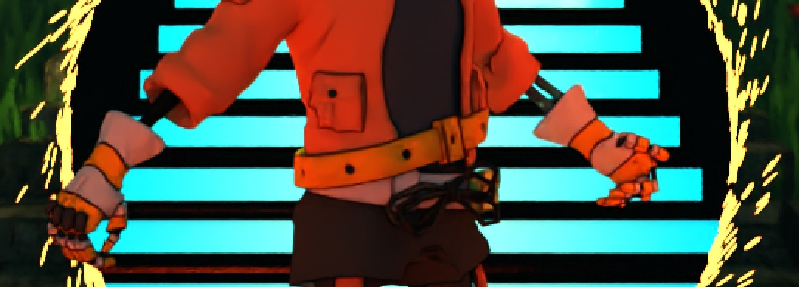
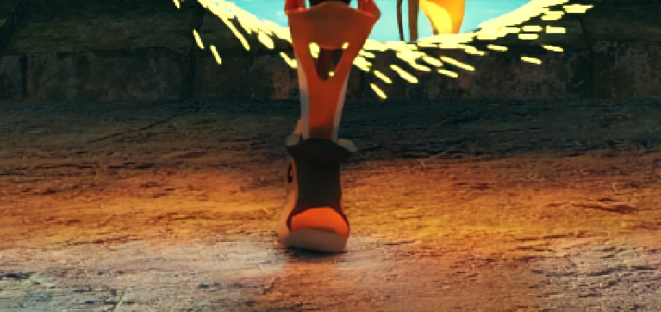
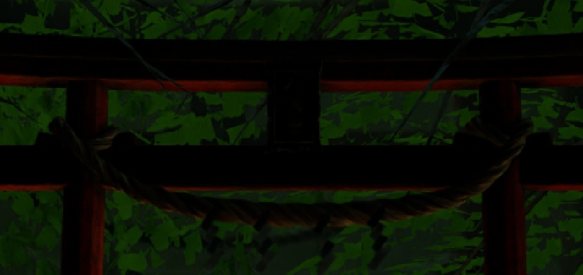
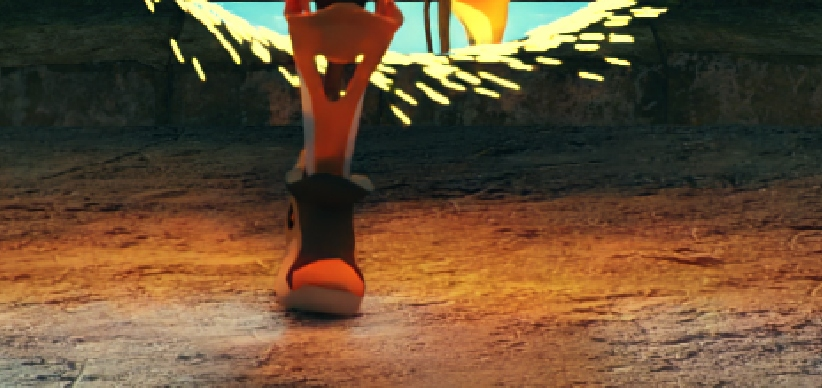
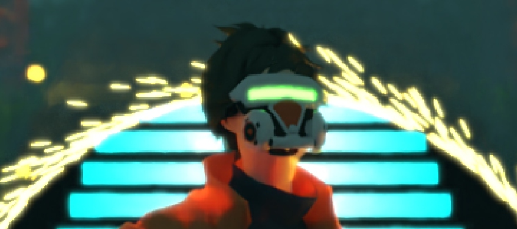
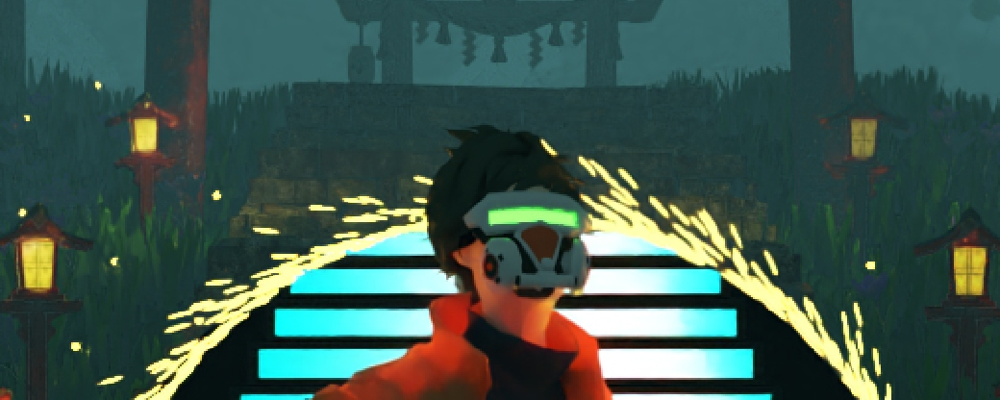
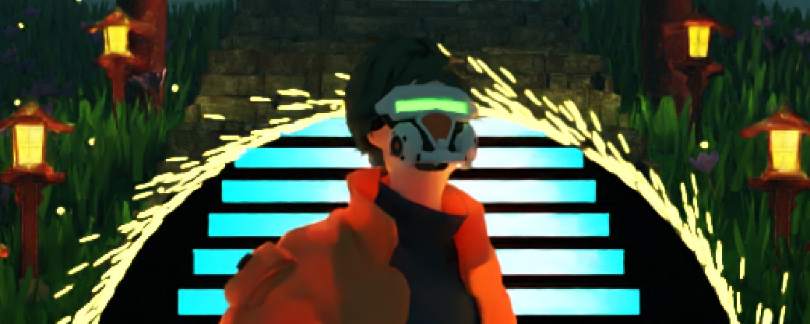
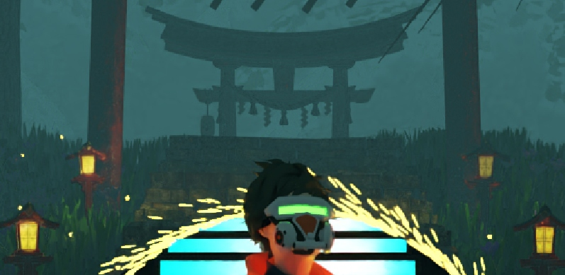

Line tracer is a feature that generates lines outlining an object to emphasizes the edges and also gives 2D and cartoon-like perspective. This implementation is based on Physically-based Feature Line Rendering by Rex West as a modification to our path tracer.

Normal mapping gives a detailed sense of the surface of an object without adding more vertices, as it defines the surface normal. It also affects how light (NEE) interacts with a surface to return colors to the camera.

Alpha masking is used to mask the leaves of the tree. This way, we just have to use a simple rectangle to model a leaf, which reduces the number of vertices to use.

Area light sources emit light from the surface of a primitive (rectangle or sphere) instead of a point (like in point or directional light) and therefore produce a smoother shadow.

The Thinlens feature simulates the use of an aperture in our camera. It makes the object in the focal distance appear in detail and blurs other objects placed at some distance.
Bloom used to give a sense of “bright light” to objects. It combines the original image and the masked convolutions of a certain threshold to give a more spreading effect of a bright light.

The halton sampler is used for randomizing the exact position in sampling the color of a pixel. Instead of sampling randomly (as in an independent sampler), it seeds the sampler to be unique for each pixel position on the screen. It results in better-distributed and consistent sample points and sometimes produces better colors compared to a simple independent sampler.

This implementation is based on the Intel OpenImageDenoising (OIDN) toolkit. By taking the color, normal, and albedo of image data, OIDN is able to filter image noises for each data point and produce a smooth and detailed result.

This effect is a simple “trick” that comes to mind, as I required a fog effect to change the mood of the scene. Basically, take the distance at the first intersection and divide it by the maximum distance to get a ratio threshold for the sampling option between object color and fog color. This will be further elaborated in the “Challenge” section.
